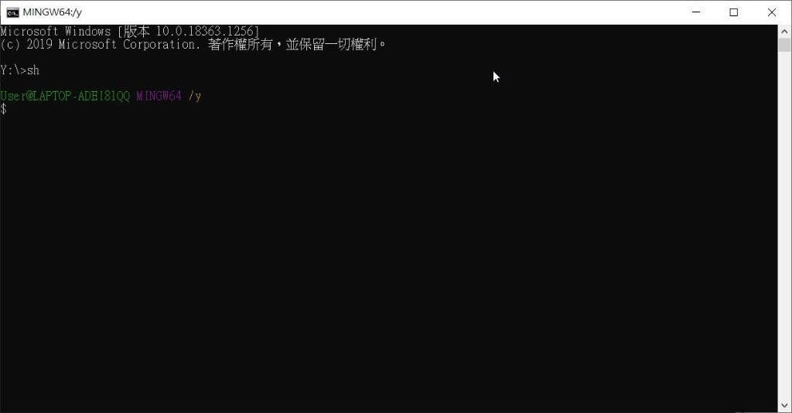
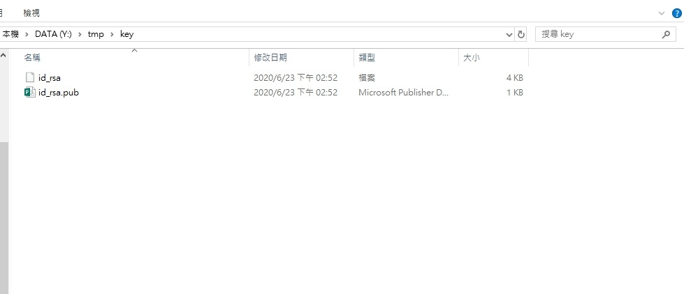
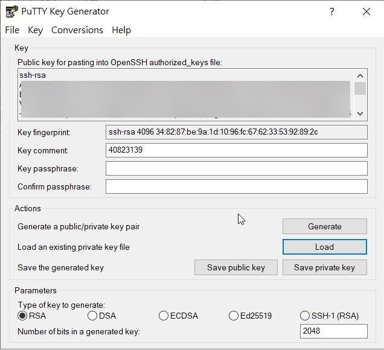
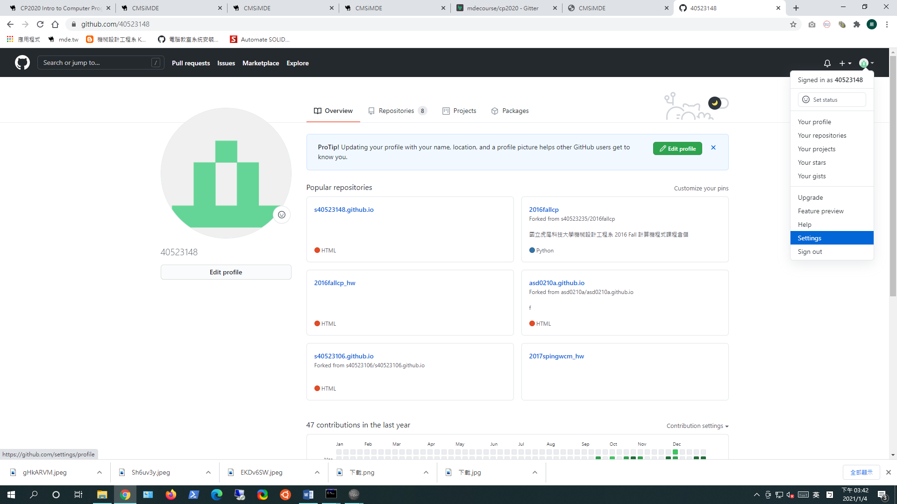
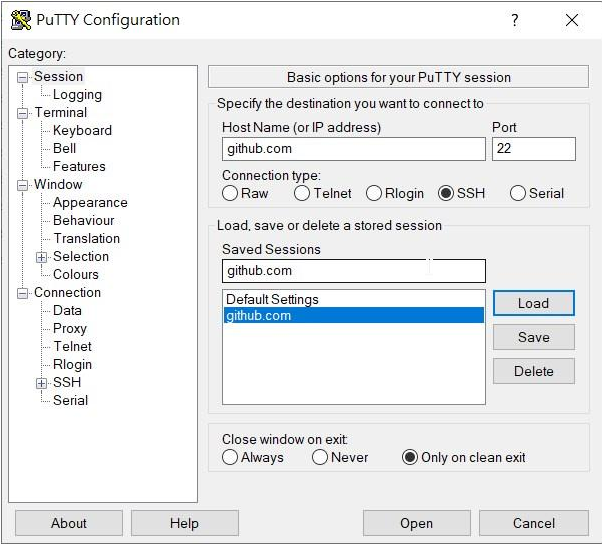
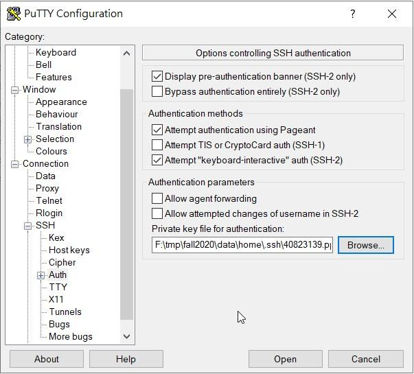

解救菜英文 <<
Previous Next >> 錯誤排除
SSH
為什麼要使用SSH?
不使用SSH時，在git push至倉儲必須輸入密碼，然而，在公開場所輸入密碼顯然是件高風險的事!
因此，藉由在本地跟遠端倉儲存入密鑰，在git push時即可藉由密鑰做身分認證，不必在每次推送時，還需要輸入密碼，大大減少曝光風險。
如何使用SSH?
step1.
進入shell環境
step2.
使用以下指令創建key
ssh-keygen -t rsa -b 4096 -C "使用者學號"
並確定是否成功創建
step3.
利用Putty中的puttygen.exe 將id_rsa解讀成private key

step4.
進入倉儲頁面，點選setting，進入SSH & GPG keys中點選New SSH key,將public key存入遠端倉儲

step5.
編譯start.bat，加入以下
set GIT_HOME=%Disk%:\portablegit\bin\
set GIT_SSH=%Disk%:\putty\plink.exe
step6.
編譯.git下的config，使其變為SSH認證
[core]
repositoryformatversion = 0
filemode = false
bare = false
logallrefupdates = true
symlinks = false
ignorecase = true
[submodule]
active = .
[remote "origin"]
#url = https://github.com/mdecourse/cad2020.git
url = git@github.com:mdecourse/cad2020.git
fetch = +refs/heads/*:refs/remotes/origin/*
[branch "master"]
remote = origin
merge = refs/heads/master
[submodule "cmsimde"]
url = https://github.com/mdecourse/cmsimde.git
step7.
進入putty.exe，將本地的private key做login


*完成後請測試推送，成功使用SSH推送後，倉儲的SSH頁面的鑰匙會變成綠色的，並在下方顯示推送日期
解救菜英文 <<
Previous Next >> 錯誤排除